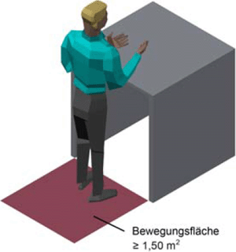
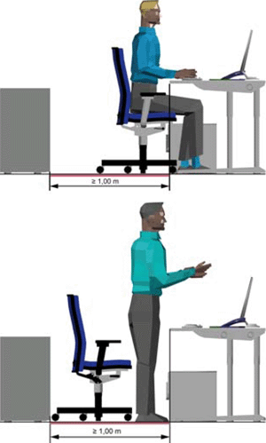
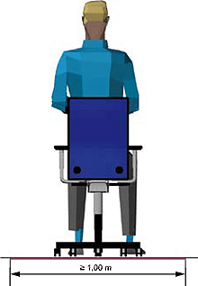
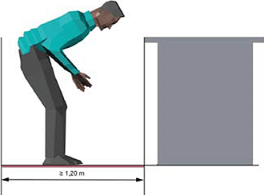
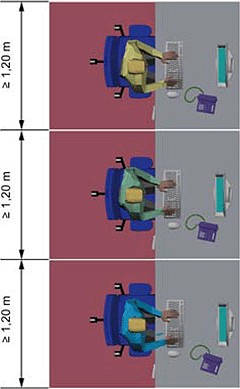
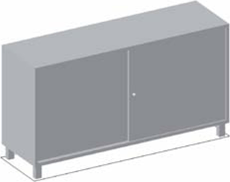
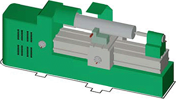
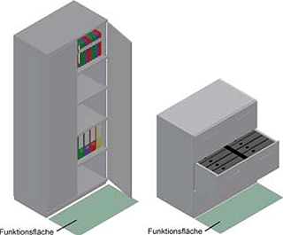
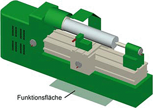
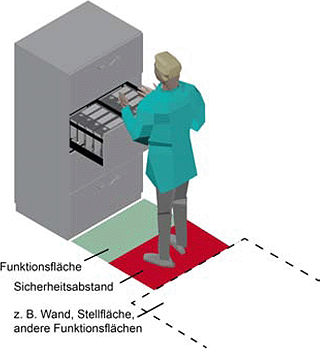

(1) Die erforderlichen Grundflächen für Arbeitsräume ergeben sich aus folgenden Flächen:
Beispiele für erforderliche Grundflächen von Arbeitsplätzen sind in den Anhängen 1 und 2 dargestellt.
(2) Bei der Bemessung der Grundfläche der Arbeitsräume sind entsprechend der Anzahl der Arbeitsplätze und der Tätigkeit zusätzlich zu den erforderlichen Flächen nach Absatz 1 die Einhaltung des Mindestluftraums nach Punkt 7 sowie gegebenenfalls weitere Anforderungen, z. B. an die Luftqualität (siehe ASR A3.6 "Lüftung") oder an die Akustik, zu berücksichtigen.
(3) Unabhängig von Absatz 1 und von der Tätigkeit dürfen als Arbeitsräume nur Räume genutzt werden, deren Grundflächen mindestens 8 m² für einen Arbeitsplatz zuzüglich mindestens 6 m² für jeden weiteren Arbeitsplatz betragen.
(4) Für Büro- und Bildschirmarbeitsplätze ergibt sich bei Einrichtung von Zellenbüros als Richtwert ein Flächenbedarf von 8 bis 10 m² je Arbeitsplatz einschließlich Möblierung und anteiliger Verkehrsflächen im Raum. Für Großraumbüros ist angesichts des höheren Verkehrsflächenbedarfs und ggf. größerer Störwirkungen (z. B. akustisch, visuell) von 12 bis 15 m² je Arbeitsplatz auszugehen. Beispielhafte Gestaltungslösungen zu den einzelnen Bürotypen sind dem Anhang 2 zu entnehmen.
(1) Zur Festlegung der Bewegungsfläche sind alle während der Tätigkeit einzunehmenden Körperhaltungen zu berücksichtigen.
(2) Die Bewegungsfläche muss mindestens 1,50 m² betragen. Ist dies aus betriebstechnischen Gründen nicht möglich, muss den Beschäftigten in der Nähe des Arbeitsplatzes eine mindestens 1,50 m² große Bewegungsfläche zur Verfügung stehen (siehe Abb. 1).

Abb. 1: Mindestgröße der Bewegungsfläche im Sitzen und Stehen (Quelle: VBG Hamburg [www.vbg.de])
Die Tiefe und die Breite der Bewegungsfläche für Tätigkeiten im Sitzen und Stehen müssen mindestens 1,00 m betragen (siehe Abb. 2 und 3).

Abb. 2: Mindesttiefe der Bewegungsfläche im Sitzen und Stehen (Quelle: VBG Hamburg [www.vbg.de])

Abb. 3: Mindestbreite der Bewegungsfläche im Sitzen und Stehen (Quelle: VBG Hamburg [www.vbg.de])
(1) Die Tiefe der Bewegungsfläche an Arbeitsplätzen mit stehender nicht aufrechter Körperhaltung muss mindestens 1,20 m betragen (siehe Abb. 4).

Abb. 4: Mindesttiefe der Bewegungsfläche für Arbeitsplätze mit stehender nicht aufrechter Körperhaltung (Quelle: VBG Hamburg [www.vbg.de])
(2) Für Beschäftigte, die für ihre Tätigkeit andere Körperhaltungen einnehmen müssen, sind die Maße für die Bewegungsfläche im Rahmen der Gefährdungsbeurteilung gesondert zu ermitteln und festzulegen.
Sind mehrere Arbeitsplätze unmittelbar nebeneinander angeordnet, muss die Breite der Bewegungsfläche an jedem Arbeitsplatz mindestens 1,20 m betragen (siehe Abb. 5).

Abb. 5: Breite der Bewegungsfläche für nebeneinander angeordnete Arbeitsplätze mit sitzender oder stehender Körperhaltung (Quelle: VBG Hamburg [www.vbg.de])
(1) Bewegungsflächen dürfen sich nicht überlagern mit:
(2) Abweichend von Absatz 1 ist eine Überlagerung der Bewegungsfläche am Arbeitsplatz des jeweiligen Nutzers möglich mit:
Dabei darf es zu keiner Beeinträchtigung der Sicherheit, der Gesundheit oder des Wohlbefindens der Beschäftigten kommen.
(1) Maße zu Höhen und Breiten von Verkehrswegen einschließlich Gängen zu den Arbeitsplätzen und gelegentlich benutzten Betriebseinrichtungen sind in der ASR A1.8 "Verkehrswege" geregelt.
(2) Maße zu Höhen und Breiten von Fluchtwegen sind in der ASR A2.3 "Fluchtwege und Notausgänge" geregelt.
Stellflächen müssen entsprechend den äußeren Abmessungen der Arbeitsmittel, Einbauten und Einrichtungen berücksichtigt werden (siehe Abb. 6 und 7).

Abb. 6: Stellfläche eines Schrankes (Quelle: VBG Hamburg [www.vbg.de])

Abb. 7: Stellfläche einer Drehmaschine (Quelle: VBG Hamburg [www.vbg.de])
Für die Ermittlung der Funktionsflächen müssen die Flächen für alle Betriebszustände, z. B. auch für Instandhaltung und Werkzeugwechsel, berücksichtigt werden (siehe Abb. 8 und 9).

Abb. 8: Funktionsflächen von Schränken (Quelle: VBG Hamburg [www.vbg.de" target="_blank" class="extern">www.vbg.de])

Abb. 9: Funktionsfläche für den Schlitten einer Drehmaschine (Quelle: VBG Hamburg [www.vbg.de])
Flächen zur Einhaltung von notwendigen Sicherheitsabständen, soweit diese nicht bereits in den Stell- oder Funktionsflächen berücksichtigt sind, sind im Rahmen der Gefährdungsbeurteilung festzulegen (siehe Abb. 10). Zur Vermeidung von Ganzkörperquetschungen muss der Sicherheitsabstand mindestens 50 cm betragen. Weitere Hinweise dafür können z. B. aus den Herstellerangaben entnommen werden.

Abb. 10: Beispiel für Funktionsfläche und Sicherheitsabstand zur Benutzung eines Schrankes (Quelle: VBG Hamburg [www.vbg.de])